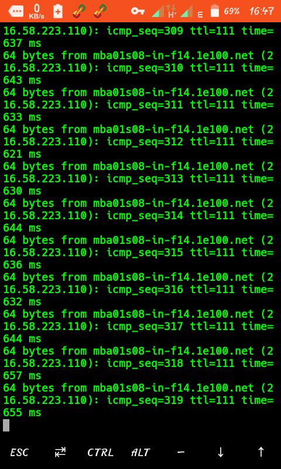
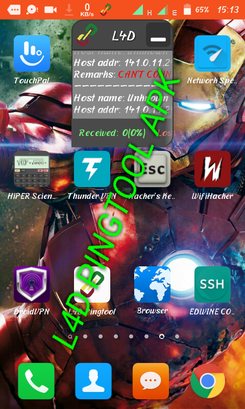

<title>HOW TO STABALIZE DROID VPN CINNECTION..</title>
<!DOCTYPE html>
<html>
<head>
<meta name="viewport" content="width=device-width, initial-scale=1">
<link rel = "stylesheet" href = "style2.css">
<nav>


<div class = "nav-bar">
<a href = "index.html">HOME</a><a href = "tutorials.html">TUTORIALS</a><a href = "blogs.html">BLOGS</a>


</div>
</body>
</nav>
<section>
<body></body>
<h><font color = "red"><u><b>
  <center>STABALIZING DROID VPN</center>
</b></u></font></h>

<l>Droid vpn is one of the commonest and best freenet provider app which can be operated premiumly or free through the free servers..<br>The only problem with this VPN is its continuous disconnection since it runs through open ports on an ISP network which is unstable due to presence of firewalls...follow me step by step..<l>
  <div class = "step">METHOD 1</div>
  <p>
    <b>
     <u>
       USING TERMUX...
     </u> 
      
    </b>
    
  </p>

<ul><li>
  Download termux app from the Appstore<br><button class = "btn"><a href = "https://m.apkpure.com/termux/com.termux
  ">DOWNLOAD APP</a></button><br>Open app and wait until it installs all bootstrap packages.....You have to make sure that you have a minimum of 30mbs inorder for it to install bootstrap packages<br>After its done...type <font color = "red">"ping www.amazon.com"</font><br>Open new session and type <font color = "red">ping www.google.com"</font><br>It is all summarized in the pics below;<br>
  
  <br>Exit from termux...open droid vpn..connect and enjoy..
</li></ul>
<div class = "step">METHOD 2</div>
<p><b><u>USING L4D PING TOOL..</u></b></p>
<ul><li>
  Download l4d pingtool apk..<br>
  <button class = "btn"><a href = "https://www.apkmart.net/app/l4d-pingtool/
  ">DOWNLOAD APP</a></button><br>After successful download and installation, turn on cellular data and open l4d pingtool..it will float on top of the screen..minimize it and and open droid vpn apk..press start...enjoy long lasting connection..is shown as below..<br>
  
</li></ul>

<div class = "step">LEGIT METHOD</div>
<p><ul><li>
  This is the most appropriate and fantsy method of making droid long lasting...<br>Use your brain for once!!..you can combine both methods 1&2 and connect the VPN..
  
  
</li></ul></p>
<br><font color = "green"><center>ENJOY YOUR DROID VPN ANONYMOUSLY..</center></font>


<table width = "100%"><tr><td width = "100%" bgcolor = "red"><font face = "courier" size = "4"><center>All rights reserved©<br>Edwine_labs uganda</center></font></td></tr></table>
</section>


<style>
  body {border:dotted green 2px;}
  h    {text-align:center; font-size:25px;}
 .step {font-size:30px; color:green; font-family:Times New Roman; text-align:center;}
  .btn {border:red solid 1px; background-color:green; color:white; font-size:20px;}
 
  ul {font-family:georgia;}
  
</style>